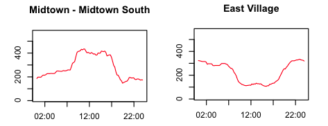

Sort, Filter, Aggregate, Merge
How do you interview a spreadsheet like a human being? Today, we’ll work on turning a spreadsheet into a story, a source, a chart or something else journalistically valuable.
Critique
- Here’s a link to the critique schedule
Discussion: your projects.
You did something, right?
Finishing our scraping
- Open yay.txt in a text editor. Replace
},with\nusing regular expressions and save your file. - Open yay.txt in Excel and use text to columns
- Watch out for duplicates in your data.
There are tons of resources out there to automate data collection – this is just (a very cheap) one. Most of them require a little more programming than this one, but it’s almost always worth the effort. Here’s a handy tipsheet from Scott Klein and Michelle Minkoff.
Enough to make you dangerous
| Sort | Data menu → Sort |
| Filter | Data menu → Filter |
| Aggregate | Data menu → Pivot table |
| Merge | =vlookup(…) |
Picking up vlookup
Here is some data on drunk driving deaths in 2011.
- Download the data to your computer, and open it in your spreadsheet program of choice.
- What were the 3 states with the most deaths? The 3 with the fewest?
- Here is some data on population. Add it to your spreadsheet using a function called
vlookup. - What were the states with the highest rates? The lowest?
- How many deaths occured in the South? What region of the country had the highest rate of deaths? Here are some region codes that might help you. For practice, answer this question by using a
pivot table. Pivot tables are one way to summarize data.
Kavitha has a problem for us.
It involves this spreadsheet.
Excel work doesn’t have to look like it

Your job is to identify as many people as you can in the picture above.
The easiest people to identify in the picture should be the runners. From the online results, here’s a spreadsheet.
Here’s a wrinkle: not everyone in the photo started at the same time. Here’s what the race organizers have to say about that: “Red bibs (numbers 101 - 8,999) are assigned to Wave 1 (10:00 a.m.). White bibs (numbers 9,000 to 17,999) are assigned to Wave 2 (10:20 a.m.). Blue bibs (numbers 18,000 +) are assigned to Wave 3 (10:40 a.m.).”
Subtract 40 minutes from the finish gun off of everyone with a bib number less than 9000, and 20 minutes from everyone with a bib number from 9000 to 17999.
Make a list of runners to call. Put their first and last names into separate columns with some combination of “Data -> Text to columns” and find and replace.
Here’s the NYT take.
Basic skills when your data is bigger
A digression: sometimes data is published to the web, but, without context, it’s hard to know whether it’s interesting or not. Here’s an example about NYC school attendance from WNYC. It’s easy to pull down this data every day, but, pretty quickly, it’s going to get big enough that you will regret any cheating / manual labor you might have done in our earlier exercises today.
See if you can find where the data that powers the Citibike stations map lives.
Here is the same data for every 15 minutes on Wednesday, June 5.
Filter the data to look at a single station.
What time of day are the fewest bikes available system-wide?
Add a column for which neighborhood each station belongs to, and answer the same question for Midtown South, the East Village, and another neighborhood of your choice. 
Why might you want to collect this data yourself instead of just asking CitiBike?
In the Google doc we used last week, make a list of questions we could answer with this type of data, either by itself, or by joining it to other data. How are they different from the questions you could answer with better data?
Homework
Make real progress on your projects.